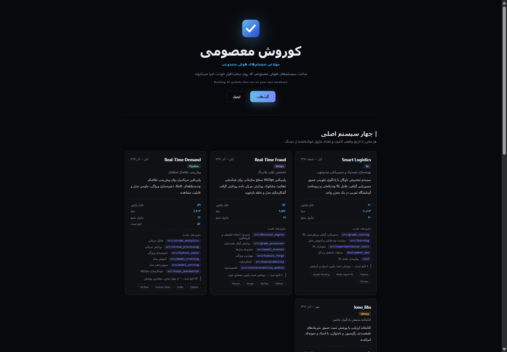
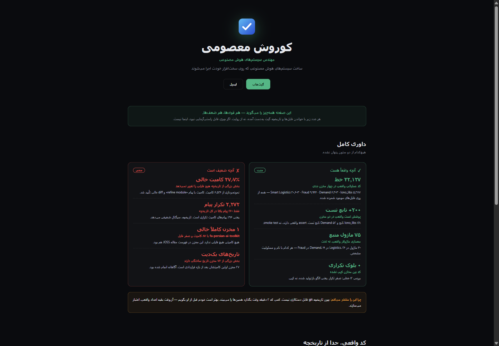
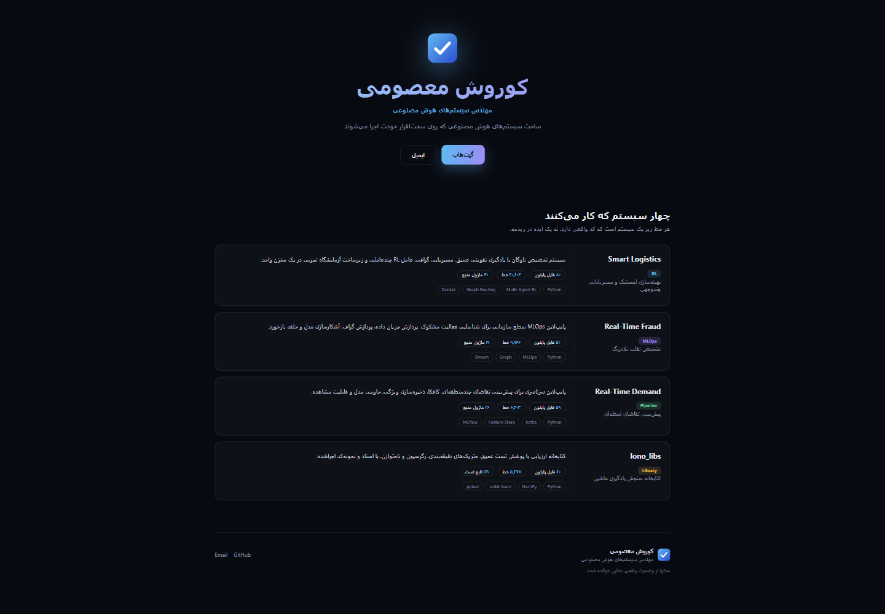
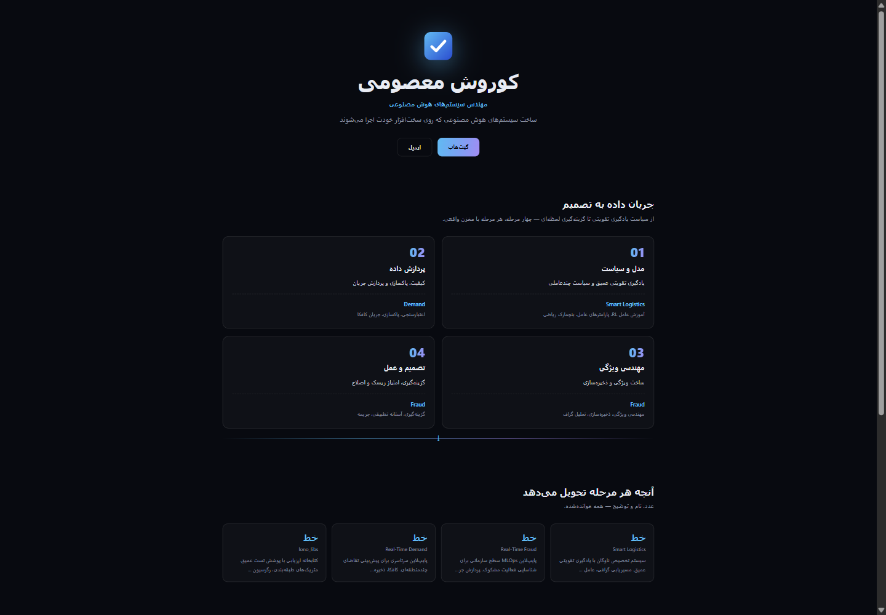
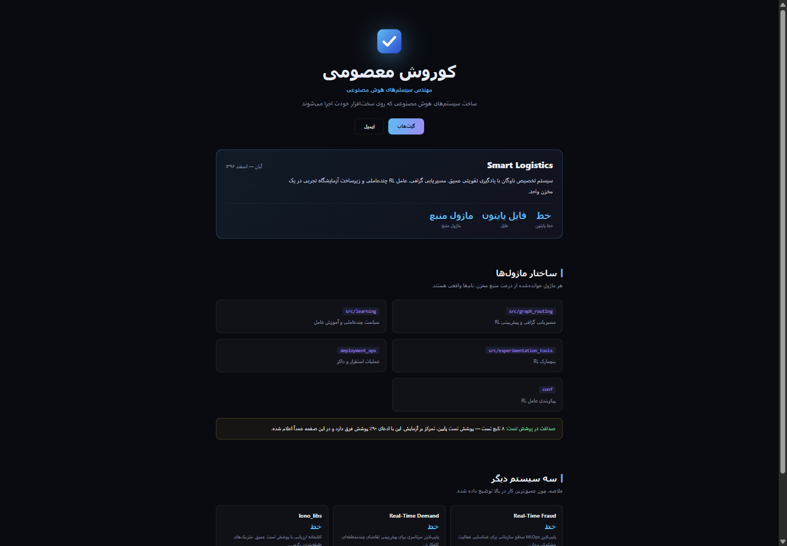
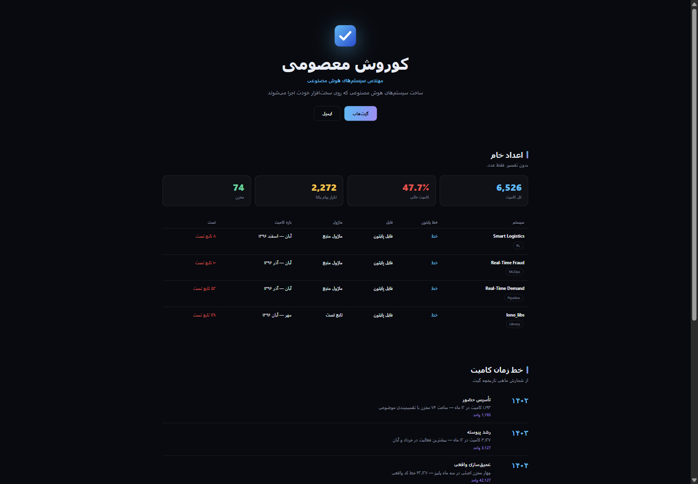
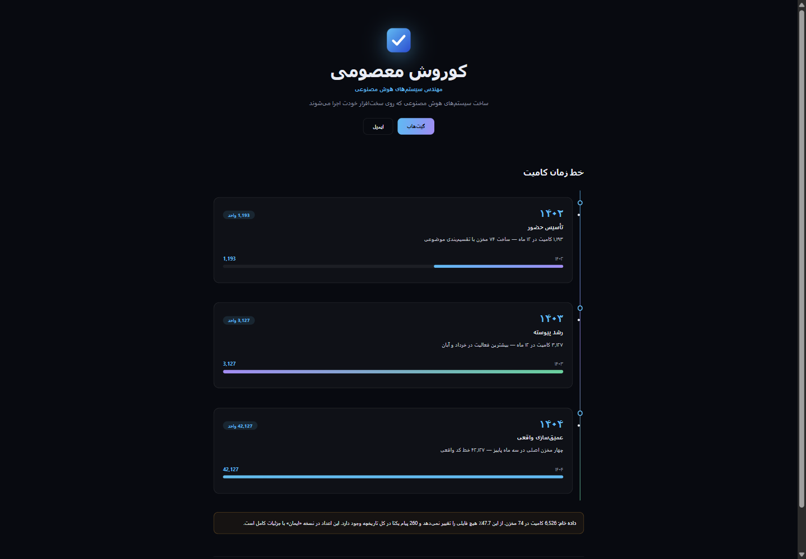
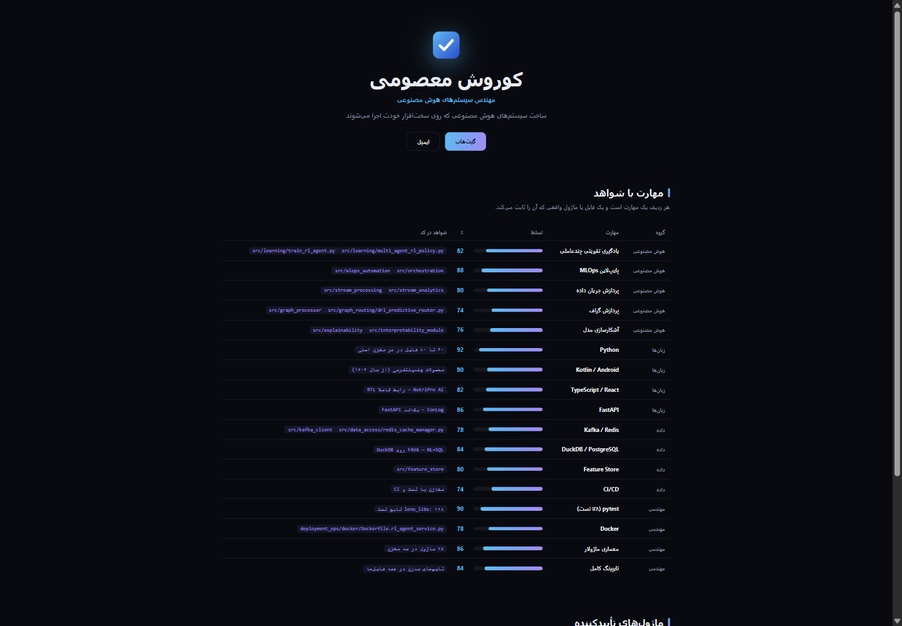
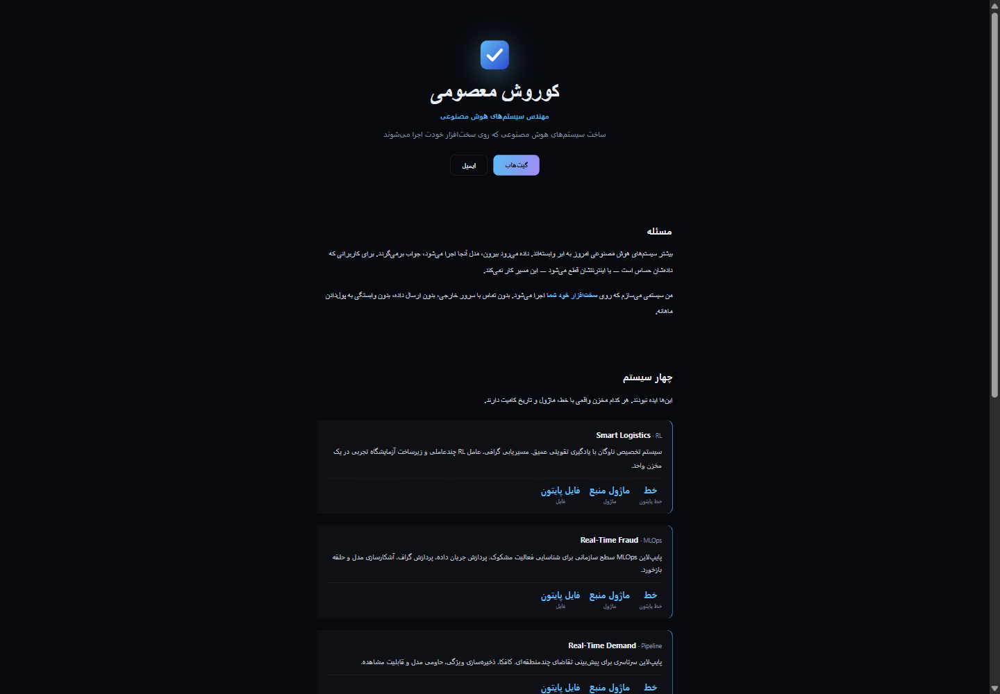
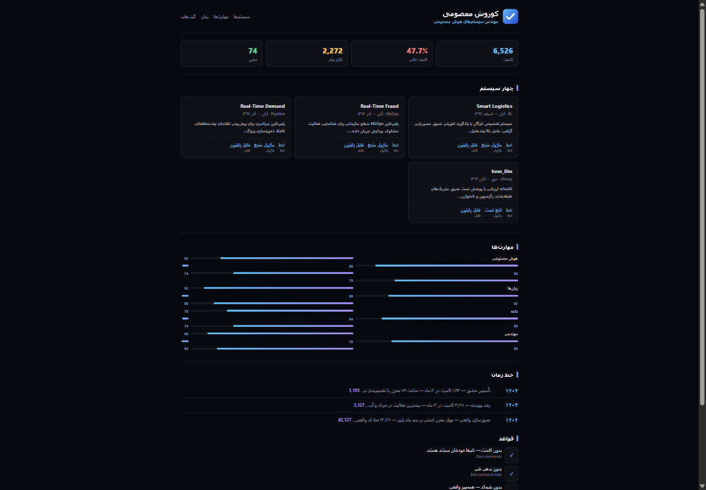

همه از یک داده واقعی ساخته شدهاند؛ آنچه فرق دارد این است که چه سؤالی را جواب میدهند. برای مشاهده، کارت را کلیک کنید.
← برای باز کردن هر نسخه، روی کارت کلیک کنید

01-architect
روی ساختار و ماژولها
از نگاه سیستم

02-ledger
مثبت و منفی، باز
شفافیت داورانه

03-products
سیستمها اول
مناسب خریدار کار

04-pipeline
داده به تصمیم
نمای چهارمرحلهای

05-deepdive
یک سیستم بازشده
نمای ماژول به ماژول

06-rawdata
همه اعداد در جدول
بدون روایت

07-timeline
رشد کامیت
از ۱۴۰۲ تا ۱۴۰۴

08-evidence
مهارت با اثبات
هر ردیف یک فایل

09-narrative
داستان در سه بخش
مسئله، سیستم، صداقت

10-compact
همه در یک صفحه
رزومهوار